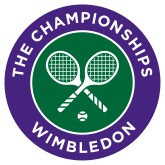

1.roland garros

Les Internationaux de France, ou tournoi de Roland-Garros, ou plus simplement Roland-Garros par métonymie, est un tournoi de tennis sur terre battue créé en 1925 et qui se tient annuellement depuis 1928 à Paris, dans le stade Roland-Garros. Il succède au Championnat de France créé en 1891. Organisé par la Fédération française de tennis (FFT), il se déroule lors de la dernière semaine de mai et la première semaine de juin

2.wimbledon

Le tournoi de Wimbledon ou The Championships, souvent abrégé par métonymie en Wimbledon, est un tournoi de tennis se déroulant annuellement dans le quartier éponyme du borough londonien de Merton dans la banlieue sud-ouest de Londres. Joué depuis le 3 juillet 1877, il est le second plus ancien tournoi de tennis au monde 1. Il est depuis ses débuts organisé par l'All England Lawn Tennis and Croquet Club, un club sportif anglais.
3.Open d'Australie
L'Open d'Australie est l'un des tournois de tennis de la catégorie du Grand Chelem organisé depuis 1905. Il se déroule chaque année au Melbourne Park, à Melbourne en Australie et a lieu au mois de janvier et en début février. Le tournoi s'est d'abord joué sur gazon de 1905 à 1987 et se dispute depuis 1988 sur une surface synthétique en dur
4.US Open
L'US Open de tennis est un tournoi de tennis se déroulant annuellement dans le parc municipal de Flushing Meadows-Corona Park à New York, au sein de l'USTA National Tennis Center. Appelé « US National Championships » jusqu'en 1967, il se joue depuis 1881 et a connu plusieurs implantations. D'abord joué à Newport, il déménage ensuite au sein du West Side Tennis Club avant de s'implanter à Flushing Meadows en 1978.